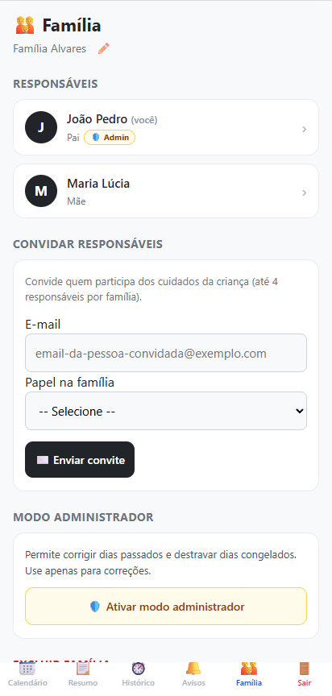
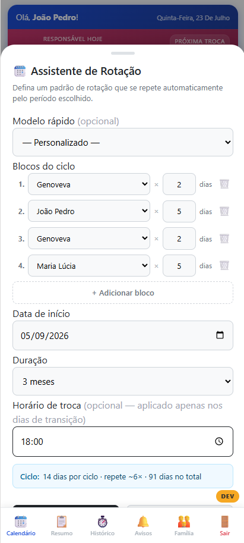
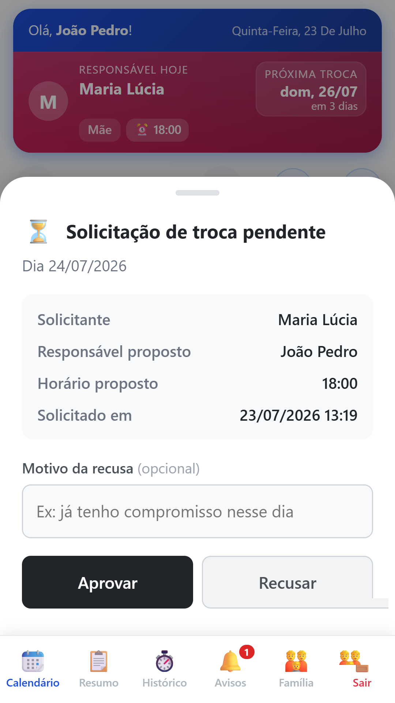
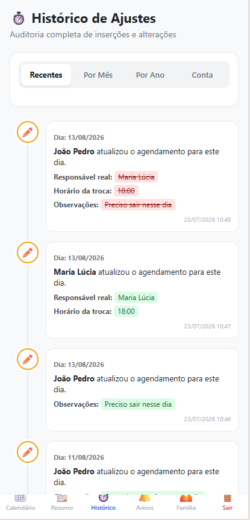
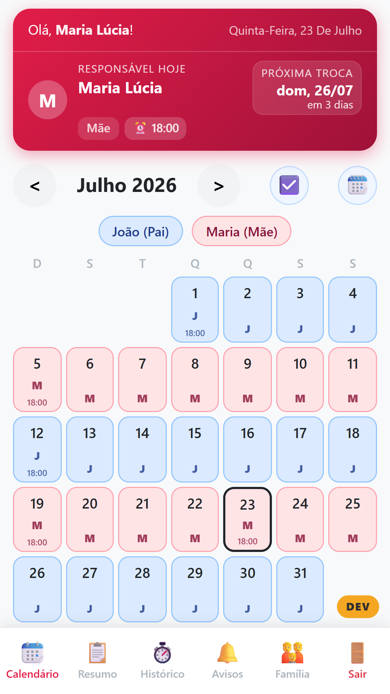
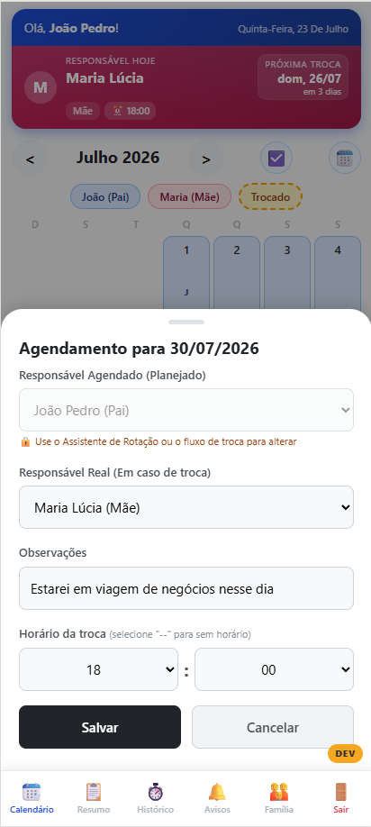
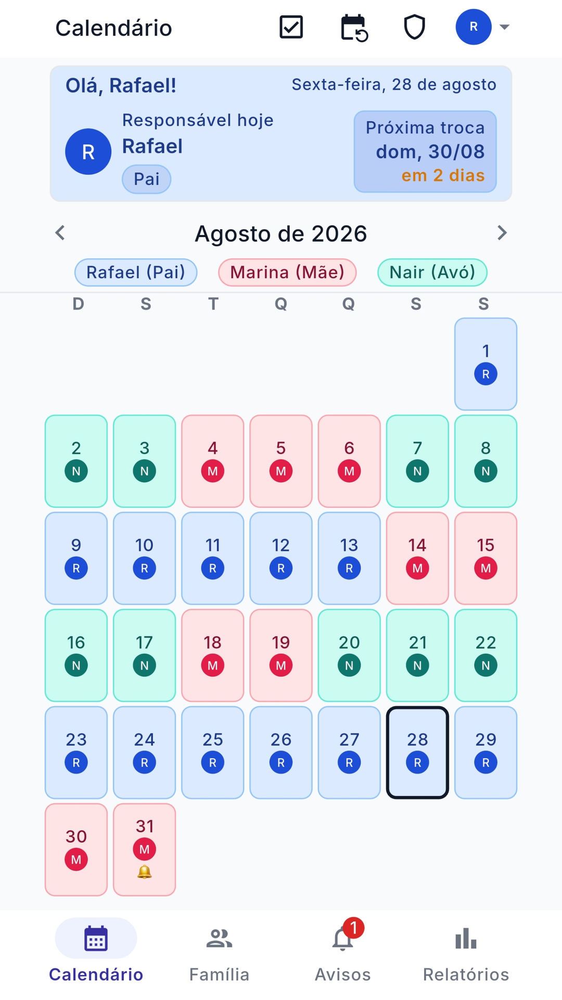
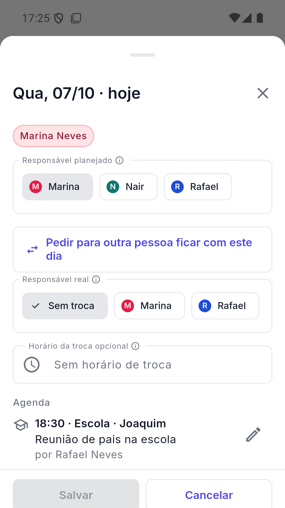
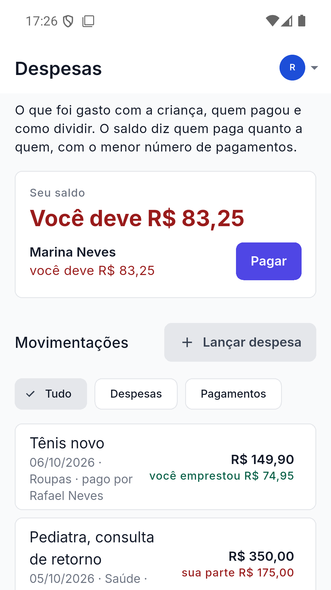
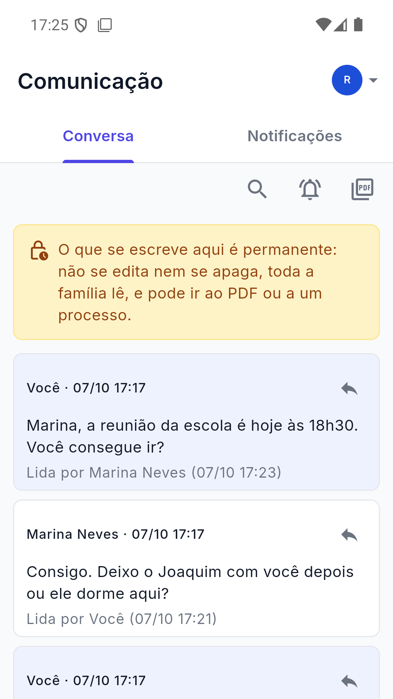

Duas casas, uma mesma infância
O app que organiza a convivência dos seus filhos na guarda compartilhada: um calendário que pai, mãe e quem mais cuida veem igual, trocas de dia que só valem com a aprovação dos dois e um histórico que não pode ser editado nem apagado.
Grátis para os dois responsáveis · sem cartão · também no navegador, no iPhone inclusive
A ideia
A criança vai e volta. O que não pode ir e voltar é o combinado: de quem é cada dia, quando muda, e quem aprovou a mudança. É isso que o Entrelares guarda — igual para as duas casas.
Cada azulejo é um dia de uma casa. Arraste a cena para girar.
O que acontece hoje
Porque combinado que fica no chat vira discussão: a mensagem se perde, cada um lembra de um jeito, e a criança fica no meio. O app existe para tirar a convivência do "eu não fiquei sabendo".
Conversa de exemplo
Como funciona
Cada passo com a tela real do app — sem demonstração encenada.
Cada um acessa com a própria conta. Dá para incluir também avós e outros cuidadores que participam da rotina.

Defina de quem é cada dia conforme o acordo de vocês — semanas alternadas, quinzenas ou um ciclo do seu jeito. Feriados e datas especiais vocês ajustam no próprio dia, ou em vários dias de uma vez.

O outro responsável aprova ou recusa, e enquanto ele não responde o dia fica como estava. Tudo fica registrado, com data e hora.

Não dá para provar um registro inalterável com uma frase. São duas telas reais do app seguindo o mesmo pedido — a troca do dia 31/08 — do card de aprovação à linha que ninguém mais tira.

Benefícios
Cada detalhe existe para responder rápido a uma pergunta e evitar uma discussão. Telas reais do app.
Abra e veja na hora de quem é o dia — hoje, amanhã e no mês inteiro. Cores diferentes para cada responsável, e a próxima troca sempre à vista.

Defina o responsável, o horário em que a criança muda de casa e uma observação para cada dia — a nota do dia é gratuita.

Qualquer mudança de dia vira uma solicitação que o outro aprova ou recusa. Sem surpresas, sem "eu não fiquei sabendo".
Cada troca, aprovação e alteração fica registrada com data e hora, num histórico que não pode ser editado nem apagado. Se o combinado um dia virar discussão, ele está lá — preto no branco.
Avós, madrastas, padrastos e outros cuidadores podem participar da família e assumir dias, com as mesmas regras de aprovação — cada um com a sua cor.

Escola, saúde, remédios e atividades de cada filho aparecem no dia do calendário, com horário e quem anotou — e lembretes para quem você escolher.

Cada gasto dividido do jeito combinado, com o saldo de cada um e o menor número de pagamentos para acertar. Um pagamento só conta quando quem recebe confirma.

Só da família, permanente e com leitura confirmada em cada mensagem. O que foi dito continua disponível, e pode ir ao relatório em PDF.

Escola, saúde, remédios e atividades de cada filho, com rotinas que se repetem e lembretes para quem você escolher.
Cada gasto dividido em partes iguais, por valor, por porcentagem ou por cotas, com o saldo de cada um. Um pagamento só conta quando quem recebe confirma — o app não movimenta dinheiro.
Uma conversa só, para todos da família, que ninguém edita nem apaga, mostrando quem já leu cada mensagem.
Para quem acompanha sem decidir — a avó, a babá: vê o calendário, a agenda e os relatórios e recebe as notificações informativas. Não altera nada.
O relatório do período traz um QR code: quem o recebe confere que o arquivo não foi alterado, e o documento não fica guardado nos nossos servidores.
Para toda família
Cada um entra com o papel que tem na vida da criança — 21 prontos, ou um próprio no Premium —, e quem só acompanha entra como visualizador.

"Nós dois precisávamos saber com clareza de quem era cada dia. Tentei uma planilha, tentei um calendário comum. Então criei uma solução própria, simples, que foi crescendo até se tornar uma verdadeira parceira na convivência com meu filho."Irineu — fundador do Entrelares, e pai em guarda compartilhada
Fui casado por 20 anos, e desse casamento veio o bem mais precioso da minha vida: meu filho. Quando a mãe dele e eu entendemos que não seguiríamos juntos, escolhemos a separação pensando no bem de todos — e, principalmente, no dele.
De repente, tudo era novo: casa, rotina, hábitos. Mas uma coisa não mudou — a vontade de estar presente na vida do meu filho. Em meio aos atritos naturais de uma separação recente, o que mais nos fazia falta era justamente o que parecia mais difícil: dar estabilidade e previsibilidade a uma criança pequena, conciliando tudo isso com a rotina de trabalho intensa da mãe dele.
Nós dois precisávamos saber com clareza de quem era cada dia. Tentei uma planilha — ajudou no começo, mas logo ficou complicada e nunca estava à mão na hora certa. Tentei um calendário comum — trabalhoso demais de manter. Então criei uma solução própria, simples, que foi crescendo até se tornar uma verdadeira parceira na convivência com meu filho.
Conversando com outros pais e mães que passaram pela separação, percebi que a falta era a mesma. Por isso decidi abrir a ferramenta para outras famílias — para tirar esse atrito do caminho num momento tão delicado, que se atravessa com carinho, amor e, acima de tudo, respeito entre todos os envolvidos.
No Android, baixe o Entrelares no Google Play. Em qualquer celular, ele tambémEm qualquer celular, o Entrelares instala direto do navegador e abre como qualquer app — com ícone na tela inicial.

Ou pelo navegador (Chrome):
Pelo navegador (Chrome):
O essencial é gratuito. O Premium libera os recursos avançados — uma assinatura por família, não por pessoa.
Tudo o que o casal precisa para organizar a convivência — sem cartão de crédito, sem pegadinha.
ou R$ 54,90/ano — 2 meses grátis
Preço de lançamento até 31/12/2026
Para famílias que precisam de mais gente e mais alcance — cobre todos os responsáveis.
Garantia de 7 dias: assinou e se arrependeu? Em até 7 dias após o pagamento, devolvemos o valor integral (art. 49 do CDC) — é só escrever para suporte@entrelares.app.
Promoção válida até 31/12/2026, só na assinatura pela versão web (web.entrelares.app). Pelo Google Play, no app Android: R$ 5,99/mês ou R$ 59,90/ano.
O preço promocional vale até 31/12/2026 e só para a assinatura pela versão web (web.entrelares.app): pague por Pix — QR code pelo aplicativo do seu banco, sem informar dados de cartão — ou por cartão de crédito, sempre em ambiente seguro do provedor (Asaas). No aplicativo Android, a assinatura é feita pelo Google Play, na sua conta Google, a R$ 5,99/mês ou R$ 59,90/ano. Cancele quando quiser: o período pago continua valendo até o fim e nenhum dado é apagado — os recursos Premium apenas voltam a ficar bloqueados. A assinatura é feita dentro do app, na página da família, por um administrador.

Do conceito ao dia a dia no app — o que os pais mais perguntam antes de começar.
Um guia visual em PDF com as formas mais comuns de dividir os dias entre os responsáveis — para vocês conversarem a partir de exemplos claros, não do zero.
Crie a conta, monte o calendário e convide o outro responsável. Em dez minutos, a rotina dos seus filhos sai do bate-boca e entra num combinado claro.
Começar agora — é grátis